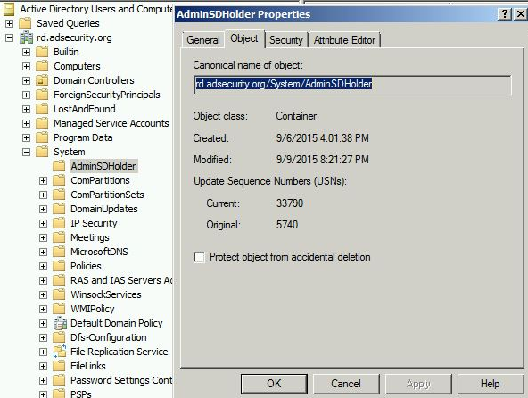

AdminSDHolder Overview
AdminSDHolder is an object located in the System Partition in Active Directory (cn=adminsdholder,cn=system,dc=domain,dc=com) and is used as a security template for objects that are members of certain privileged groups. Objects in these groupsare enumerated and any objects with security descriptors that don't match the AdminSDHolder ACL are flagged for updating. The Security Descriptor propagator (SDProp) process runs every 60 minutes on the PDC Emulator and re-stamps the object Access Control List (ACL) with security permissions set on the AdminSDHolder

Objects protected by AdminSDHolder have the attribute "AdminCount" set to 1 and security inheritance is disabled.
Note that when an object is removed from one of the protected groups, AdminCount is not set to another value. This is due to early feedback when Windows 2000 was released
Conclusion:
AdminSDHolder is a sneaky method for an attacker to persist granting the ability to modify the most privileged groups in Active Directory by leveraging a key security component. Even if the permissions are changed on a protected group or user, SDProp will change the securtiy permissions to match that of the AdminSDHolder object.